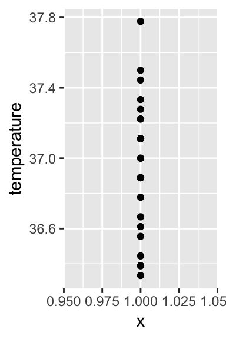
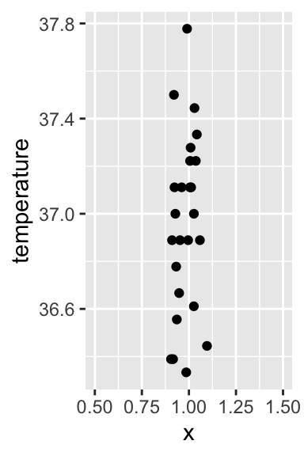
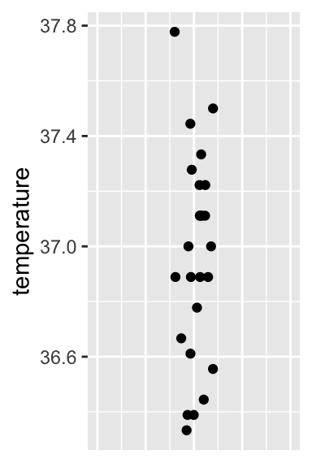
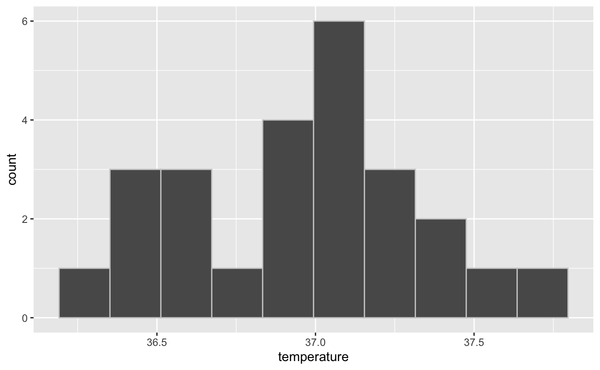
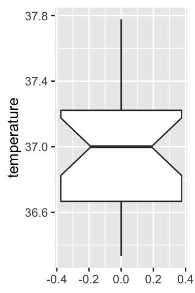
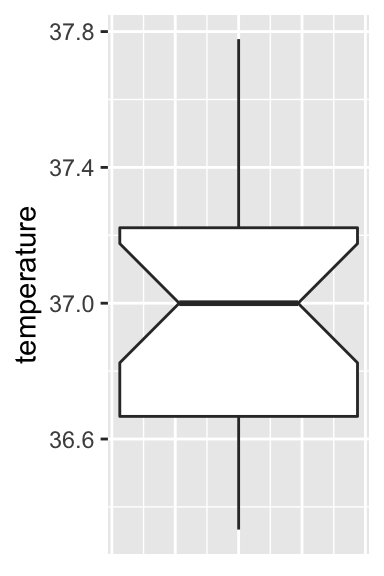

3 Séance 1 : statistiques descriptives et tests d’hypothèses
3.1 Packages et données
Pour chacune des 4 séances de travaux pratiques (et TEA) qui viennent, vous aurez besoin d’utiliser des packages spécifiques et d’importer des données depuis des fichiers externes disponibles sur l’ENT.
Les packages dont vous aurez besoin pour cette séance, et que vous devez donc charger en mémoire, sont les suivants :
library(tidyverse)
library(readr)
library(skimr)Si ces commandes (que vous devez taper dans vos scripts avant de les exécuter dans la console de RStudio) renvoient des messages d’erreur, c’est que les packages que vous essayez de charger en mémoire ne sont pas installés sur votre ordinateur. Il vous faudra alors installer les packages manquants avec la fonction :
install.packages("nom_du_package")Comme d’habitude, si tout ça est un peu flou pour vous, relisez la section 2.3 du livre de biométrie 2 disponible en ligne.
Vous aurez également besoin des jeux de données suivants :
Temperature.csvTestosterone.csvHornedLizards.csvHommesFemmes.txt
3.2 Comparaison de la moyenne d’une population à une valeur théorique
3.2.1 Exploration préalable des données
Avant de se lancer dans les tests d’hypothèses, il est toujours indispensable d’examiner les données dont on dispose à l’aide, d’une part de statistiques descriptives numériques, et d’autres part, de graphiques exploratoires. Nous allons voir dans cette section quels indices statistiques il peut être utile de calculer et quelles représentations graphiques il peut être utile de réaliser afin de pouvoir se lancer dans des tests d’hypothèses risquer de grossières erreurs.
3.2.1.1 Importation et examen visuel
Commencez par importer les données contenues dans le fichier Temperature.csv. Pour cela, utilisez l’assistant d’importation de RStudio. Si vous ne savez plus comment faire, consultez la section 5.3 du livre en ligne de Biométrie 2.
Vous stockerez les données dans un objet que vous nommerez Temperature. Après l’importation, taper son nom dans la console de RStudio doit produire le résultat suivant :
Temperature# A tibble: 25 x 2
individual temperature
<dbl> <dbl>
1 1 98.4
2 2 98.6
3 3 97.8
4 4 98.8
5 5 97.9
6 6 99
7 7 98.2
8 8 98.8
9 9 98.8
10 10 99
# … with 15 more rowsCe tableau contient les températures corporelles de 25 adultes en bonne santé choisis au hasard parmi la population américaine. On souhaite examiner la croyance populaire indiquant que la température moyenne d’adultes en bomme santé vaut 37ºC.
La première chose à faire quand on travaille avec des données inconnues, c’est d’examiner les données brutes. Ici, les données sont importées au format tibble, donc seules les premières lignes sont visibles. Pour visualiser l’ensemble du tableau, utilisez la fonction View() :
View(Temperature)Cette commande doit ouvrir un nouvel onglet présentant les données dans un tableur simplifié, en lecture seule.
On constate ici 2 choses que nous allons modifier :
- la première colonne, intitulé
inidividual, n’est pas véritablement une variable. Cette colonne ne contient qu’un identifiant qui est en fait identique au numéro de ligne. Nous allons donc supprimer cette colonne - les températures sont exprimées en degrés Fahrenheit, ce qui rend leur lecture difficile pour nous qui sommes habitués à utiliser le système métrique et les degrés Celsius. Nous allons donc convertir les températures en degrés Celsius grâce à la formule suivante :
\[ºC = \frac{ºF - 32}{1.8}\]
Temp_clean <- Temperature %>%
select(-individual) %>% # Suppression de la première colonne
mutate( # Transformation des tempértures en Celsius
temperature = (temperature - 32) / 1.8
)
Temp_clean# A tibble: 25 x 1
temperature
<dbl>
1 36.9
2 37.0
3 36.6
4 37.1
5 36.6
6 37.2
7 36.8
8 37.1
9 37.1
10 37.2
# … with 15 more rowsIl nous est maintenant possible d’examiner à nouveau les données avec la fonction View(). Avec des valeurs de températures comprises entre 36.3 ºC et 37.8 ºC, il n’y a visiblement pas de données aberrantes.
C’est toujours la première chose à faire : regarder les données brutes pour repérer : - La nature des variables présentes. - Les variables inutiles qui pourront être supprimées ou négligées. - Les unités des variables utiles, afin de pouvoir les convertir si nécessaire. - Les valeurs manquantes ou aberrantes qui demanderont toujours un soin particulier.
Une fois l’examen préliminaire des données réalisé, on peut passer au calcul des statistiques descriptives.
3.2.1.2 Statistiques descriptives
On s’intéresse ici au calcul de grandeurs statistiques nous apportant des renseignement sur la distribution des valeurs de l’échantillon. Les questions auxquelles on tente de répondre à ce stade sont les suivantes :
- Quelle est la tendance moyenne
- Quelle est la dispersion des données autour de la moyenne
Pour répondre à ces questions, on peut faire appel à de multiples fonctions. J’en évoquerai ici seulement 3 qui permettent d’obtenir la plupart des informations dont nous avons besoin très simplement :
summary(Temp_clean) temperature
Min. :36.33
1st Qu.:36.67
Median :37.00
Mean :36.96
3rd Qu.:37.22
Max. :37.78 Comme son nom l’indique, la fonction summary() renvoie un résumé des données :
- les valeurs extrêmes (minimum et maximum)
- les valeurs “centrales” (moyenne et médiane)
- les valeurs des quartiles (premier et troisième quartiles)
Ces valeurs seront presques toutes reprises sur le graphique de type “boîte à moustaches” que nous verrons plus bas.
On constate ici que la moyenne et la médiane sont très proches. La distribution des température doit donc être à peut près symmétrique, avec à peu près autant de valeurs au dessus que de valeurs en dessous de la moyenne.
La seconde fonction utile est la fonction IQR(), comme “Inter Quartile Range” (ou intervalle inter-quartile). Cette fonction renvoie l’étendue de l’intervalle inter-quartile, c’est à dire la valeur du troisième quartile moins la valeur de premier quartile. Attention, cette fonction a besoin d’un vecteur en guise d’argument, or nos données sont stockées sous forme de tibble. Nous allons donc utiliser la fonction pull() du package dplyr afin de transformer (momentanément) la colonne temperature du tableau Temp_clean en vecteur :
Temp_clean %>% pull(temperature) %>% IQR()[1] 0.5555556On constate ici que l’intervalle inter quartile a une largeur de 0.55 degrés Celsius. Cela signifie que les 50% des températures les plus centrales sont situées dans un intervalle d’environ un demi-degré celsius.
Enfin, un eautre façon d’obtenir des informations rapidement consiste à utiliser la fonction skim() du package skimr :
skim(Temp_clean)Skim summary statistics
n obs: 25
n variables: 1
── Variable type:numeric ─────
variable missing complete n mean sd p0 p25 p50 p75
temperature 0 25 25 36.96 0.38 36.33 36.67 37 37.22
p100 hist
37.78 ▅▃▁▇▇▂▂▁(Attention : si vous lisez ce document au format pdf, vous ne pourrez pas visualiser correctement la totalité des résultats produits par cette fonction. Consultez la version html de ce document, ou tapez la commande dans RStudio).
Toute comme summary(), la fonction skim() renvoie les valeurs minimales et maximales, les premiers et troisièmes quartiles ainsi que la moyenne et la médiane. Elle nous indique en outre la valeur de l’écart-type de l’échantillon, ainsi que le nombre d’observation et le nombre de données manquantes. Enfin, elle fournit un histogramme très schématique et sans échelle. Cet histogramme nous permet de nous faire une première idée de la distribution des données.
Outre ces 3 fonctions (summary(), IQR(), et skim()), il est bien sûr possible de calculer toutes ces valeurs manuellement si besoin :
mean()permet de calculer la moyennemedian()permet de calculer la médianemin()etmax()permettent de calculer les valeurs minimales et maximales respectivementquantile()permet de calculer les quartilessd()permet de calculer l’écart-typevar()permet de calculer la variance
Toutes ces fonctions prennent seulement un vecteur en guise d’argument. Il faut donc procéder comme avec IQR() pour les utiliser. Par exemple, pour calculer la variance, on peut taper :
Temp_clean %>% pull(temperature) %>% var()[1] 0.1417901ou :
var(Temp_clean$temperature)[1] 0.14179013.2.1.3 Exploration graphique
Ici, il s’agit d’examiner la distribution des données. Pour cela, 3 types de graphiques sont généralement utilisés.
- Les nuages de points ou stripcharts :
Temp_clean %>%
ggplot(aes(x = 1, y = temperature)) +
geom_point()
Dans la mesure ou souvent, plusieurs observations ont la même valeur, il faut tenir compte de l’over-plotting. Si vous ne vous rappelez plus de quoi il s’agit, consultez la section 4.3.4 du livre en ligne de Biométrie 2. Globalement, pour visualiser correctement les données, on va jouer soit sur la transparence des points, soit sur l’ajout d’un bruit aléatoire horizontal qui permettra de distinguer plsu facilement les points,m et de repérer les zones où les points sont abondants ou rares :
Temp_clean %>%
ggplot(aes(x = 1, y = temperature)) +
geom_jitter(height = 0, width = 0.1) +
xlim(0.5, 1.5)
La fonction xlim() permet de spéccifier manuellement les valeurs limites que l’on souhaite pour l’axe des abscisses. Ici, cet axe n’a aucune signification particulière puisque nous n’avons qu’une unique série de données (c’est la raison pour laquelle les points sont centrés sur l’abscisse x = 1). Nous pouvons donc le masquer comme ceci :
Temp_clean %>%
ggplot(aes(x = 1, y = temperature)) +
geom_jitter(height = 0, width = 0.1) +
xlim(0.5, 1.5) +
theme(axis.text.x = element_blank(),
axis.ticks.x = element_blank(),
axis.title.x = element_blank())
On constate ici que la répartition des points est assez régulière, avec néanmoins une majorité de points entre 36.8 et 37.3 degrés Celsius.
- L’histogramme :
Temp_clean %>%
ggplot(aes(x = temperature)) +
geom_histogram(bins = 10, color = grey(0.8))
Si vous ne vous rappelez-plus ce qu’est un histogramme où comment le faire, ou la signification de l’argument bins, relisez la section 4.5 du livre en ligne de Biométrie 2.
Notez ici que la forme de cet histogramme est très proche de celle présenté plus tôt pas la fonction skim(). Cet histogramme nous apprend qu’en dehors d’un “trou” autour de la température 36.75 ºC, la distribution des données est proche d’une courbe en cloche. Il y a fort à parier qu’un test de normalité concluerait à la normalité des données de cet échantillon.
- Les boîtes à moustaches :
Temp_clean %>%
ggplot(aes(y = temperature)) +
geom_boxplot(notch = TRUE)
Comme pour le stripchart présenté plus haut, l’axe des abscisses n’a ici aucun sens. Nous n’avons qu’une unique série de données, l’axe des x est donc inutile et nous pouvons donc le retirer :
Temp_clean %>%
ggplot(aes(y = temperature)) +
geom_boxplot(notch = TRUE) +
theme(axis.text.x = element_blank(),
axis.ticks.x = element_blank())
On retrouve sur ce graphique tous les éléments obtenus avec la fonction summary() à l’exception de la moyenne. Assurez-vous que vous êtes bien capables d’identifier tous ces éléments sur le graphique. Assurez-vous aussi que la signification de l’encoche (obtenue avec l’argument notch = TRUE) est bien claire pour vous. Comme toujours, si ce n’est pas le cas, consultez la section dédiée aux boxplots dans le livre en ligne de Biométrie 2.
Pour conclure, ces 3 types de représentations graphiques (nuages de points ou stripchart, histogrammes et boxplots) sont complémentaires. Ces trois types de représentations graphiques permettent de visualiser la distribution d’une variable numérique. Les nuages de points permettent de voir toutes les données brutes. Les histogrammes résument les données en quelques valeurs : une valeur d’abondance pour chaque classe de taille. Les boxplots résument encore plus les données avec seulement 7 valeurs qui caractérisent la distribution :
Figure 3.1: Comparaison de 2 types de représentations graphiques
À chaque nouvelle analyse statistique, il sera donc important de visualiser les données afin de repérer les éventuels problèmes, et afin d’anticiper sur les résultats que fourniront les tests d’hypothèses ultérieurs. Ici, l’examen de ces graphiques nous permet de dire les choses suivantes :
- Il n’y a visiblement pas de données aberrantes
- La distribution des données semble suivre à peu près la loi Normale
- La médiane et son intervalle de confiance à 95% sont centrés sur la valeur 37ºC. Un test devrait donc arriver à la conclusion que la température corporelle des adultes n’est pas significativement différente de 37ºC. Néanmoins, la largeur de l’intervalle de confiance à 95% est assez grande, ce qui indique une incertitude relativement élevée. Une plus grande quantité de données permettrait certainement d’obtenir plus de précision.
3.2.2 Le test paramétrique
Le test permettant de comparer la moyenne d’une population à une valeur théorique, fixée par l’utilisateur, est le test de Student à un échantillon. Il s’agit d’un test paramétrique très puissant. Comme tous les tests paramétriques, certaines conditions d’application doivent être vérifiées avant de pouvoir l’appliquer.
3.2.2.1 Conditions d’application
Les conditions d’application du test de Student à un échantillon sont les suivantes :
- Les données de l’échantillon sont issues d’un échantillonnage aléatoire au sein de la population générale. Cette condition est partagée par toutes les méthodes que nous verrons dans ces TP. En l’absence d’informations sur la façon dont l’échantillonnage a été réalisé, on considère que cette condition est remplie. Il n’y a pas de moyen statistique de le vérifier, cela fait uniquement référence à la stratégie d’échantillonnage et à la rigueur de la procédure mise en œuvre lors de l’acquisition des données.
- La variable étudiée doit suivre une distribution Normale dans la population générale. Nous allons vérifier cette condition d’application avec un test de Normalité de Shapiro-Wilk.
Comme pour tous les tests statistiques que nous allons réaliser lors de ces séances de TP et TEA, nous devons commencer par spécifier les hypothèses nulles et alternatives aoinsi que la valeur du seuil \(\alpha\) que nous allons utiliser. Ici, nous utiliserons toujours le seuil \(\alpha = 0.05\).
Pour un test de normalité, les hypothèses sont toujours les suivantes : - H\(_0\) : la variable étudiée suit une distribution Normale dans la population générale. - H\(_1\) : la variable étudiée ne suit pas une distribution Normale dans la population générale.
Le test de Shapiro-Wilk se réalise de la façon suivante :
Temp_clean %>%
pull(temperature) %>%
shapiro.test()
Shapiro-Wilk normality test
data: .
W = 0.97216, p-value = 0.7001W est la statistique du test. Elle permet à RStudio de calculer la p-value du test. Ici, \(p > \alpha\). On ne peut donc pas rejeter l’hypothèse nulle de noramlité : on ne peut pas exclure que dans la population générale, la température suive bel et bien une distribution Normale. Les conditions d’application du test de Student sont bien vérifiées.
3.2.2.2 Réalisation du test et interprétation
Puisque les conditions d’application du test de Student à un échantillon sont vérifiées, nous devons maintenant spécifier les hypothèses nulles et alternatives que nous allons utiliser pour réaliser ce test :
- H\(_0\) : dans la population générale, la température corporelle moyenne des adultes en bonne santé vaut 37ºC (\(\mu = 37\)).
- H\(_1\) : dans la population générale, la température corporelle moyenne des adultes en bonne santé est différente de 37ºC (\(\mu \neq 37\)).
On réalise ensuite le test de la façon suivante :
Temp_clean %>% pull(temperature) %>% t.test(mu = 37)
One Sample t-test
data: .
t = -0.56065, df = 24, p-value = 0.5802
alternative hypothesis: true mean is not equal to 37
95 percent confidence interval:
36.80235 37.11321
sample estimates:
mean of x
36.95778 Sur la première ligne, R nous confirme que nous avons bien réalisé un test de STudent à un échantillon. La prmière ligne de résutats fournit la valeur du \(t\) calculé (ici, -0.56), le nombre de degrés de libertés (ici, df = 24), et la \(p\)-value (ici, 0.58, soit une valeur supérieure à \(alpha\)). Cette première ligne contient donc tous les résultats du test qu’il conviendrait de rappeler dans un rapport. On devrait ainsi dire :
Au seuil \(\alpha\) de 5%, on ne peut pas rejeter l’hypothèse nulle \(\mu = 37\) (\(t = -0.56\), ddl = 24, \(p = 0.58\)). Les données observées sont donc compatibles avec l’hypothèse selon laquelle la température corporelle moyenne des adultes en bonne santé vaut 37ºC.
C’est de cette manière que vous devriez rapporter les resultats de ce test dans vos comptes-rendus et rapports à partir de maintenant.
Dans les résultats du test, la ligne suivante (alternative hypothesis: ...) ne donne pas la conclusion du test. Il s’agit simplement d’un rappel concernant l’hypothèse alternative qui a été utilisée pour réaliser le test. Ici, l’hypothèse alternative utilisée est une hypothèse bilatérale (\(\mu \neq 37\)). Nous verrons plus tard comment spécifier des hypothèse alternatives uni-latérales, même si la plupart du temps, mieux vaut s’abstenir de réaliser de tels tests (à moins bien sûr d’avoir une bonne raison de la faire).
Les résultats fournis ensuite concernent non plus le test statistique à proprement parler, mais l’estimation. Ici, la moyenne de l’échantillon est fournie. Il s’agit de la meilleure estimation possible de la moyenne de la population : \(\bar{x} = \hat{\mu} = 36.96\). Comme pour toutes les estimations, cette valeur est entachée d’oncertitude liée à la fluctuation d’échantillonnage. L’intervalle de confiance à 95% de cette estimation de moyenne est donc également fourni : \([36.80 ; 37.11]\). Autrement dit, cet intervalle contient les valeurs les plus vraissemblables pour la véritable valeur de moyenne dans la population générale. Cela confirme bien que nous n’avons pas prouvé au sens strict que la moyenne de la population vaut 37ºC. Nous avons en réalité montré que nous ne pouvions pas exclure que la moyenne de la population générale soit de 37ºC. Cette valeur est en effet comprise dans l’intervalle de confiance. On ne peut donc pas l’exclure. Mais beaucoup d’autres valeurs figurent aussi dans cet intervalle. Il est donc tout à fait possible que la moyenne soit en réalité différente de 37ºC. Pour en être sûr, il faudrait probablement un échantillon de plus grande taille afin de limiter l’incertitude.
3.2.3 L’alternative non paramétrique
Si jamais les conditions d’application du test de Student à un échantillon n’étaient pas remplies, il faudrait alors réaliser son équivalent non paramétrique : le test de Wilcoxon des rangs signés. Ce test est moins puissant que son homologue paramétrique. On ne l’effectue donc que lorsque l’on n’a pas le choix :
Temp_clean %>% pull(temperature) %>% wilcox.test(mu = 37, conf.int = TRUE)Warning in wilcox.test.default(., mu = 37, conf.int = TRUE): cannot
compute exact p-value with tiesWarning in wilcox.test.default(., mu = 37, conf.int = TRUE): cannot
compute exact confidence interval with ties
Wilcoxon signed rank test with continuity correction
data: .
V = 143, p-value = 0.6077
alternative hypothesis: true location is not equal to 37
95 percent confidence interval:
36.77780 37.11114
sample estimates:
(pseudo)median
36.94446 La syntaxe est identique à celle du test de Student à un échantillon à une exception près : l’ajout de l’argument conf.int = TRUE qui permet d’afficher la (pseudo)médiane de l’échantillon et son intervalle de confiance à 95%.
Les hypothèses nulles et alternatives de ce test sont les mêmes que celles du test de Student à un échantillon. En toute rigueur, on teste l’égalité de la médiane à une valeur théorique, et non l’égalité de la moyenne. Mais dans la pratique, la grande majorité des utilisateurs de ce test font l’amalgame entre moyenne et médiane. Ici, la conclusion correcte devrait être :
Au seuil \(\alpha\) de 5%, on ne peut pas rejeter l’hypothèse nulle (test de Wilcoxon des rangs signés, \(V\) = 143, \(p\) = 0.6077). La médiane de la population (\(\widehat{med}\) = 36.94) n’est pas significativement différente de 37ºC (IC 95% : \([36.78 ; 37.11]\)).
Si les données ne suivent pas la loi Normale, la médiane est bien la métrique la plus intéressante puisque c’est elle qui nous renseigne sur la tendance centrale des données.
Enfin, les tests de Wilcoxon renvoient souvent des messages d’avretissement. Il ne s’agit que de ça : des avertissements. Tant que la \(p\)-value des tests est éloignée de la valeur seuil \(\alpha\), cela n’a pas d’importance. Quand en revanche la \(p\)-value est très proche de \(\alpha\), il faut être très prudent face aux conclusions du test qui peuvent alors être assez “fragiles”.